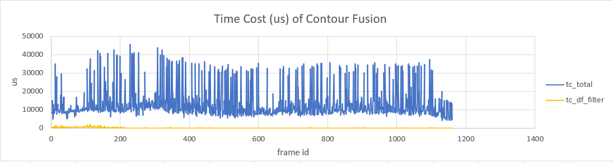
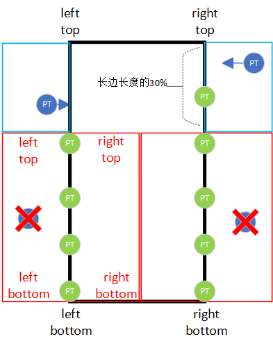
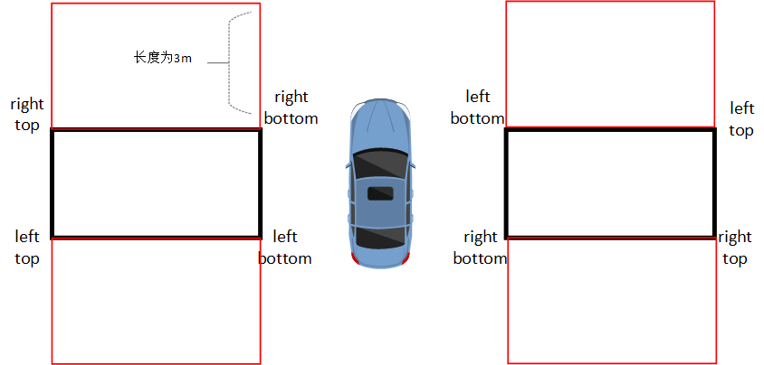
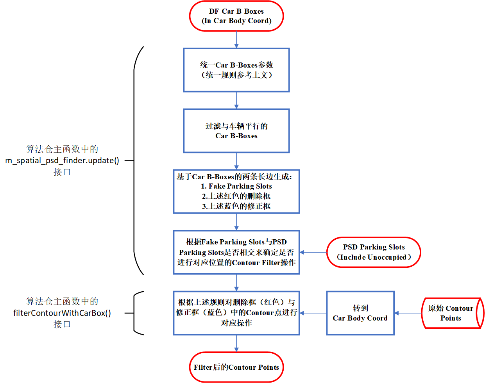
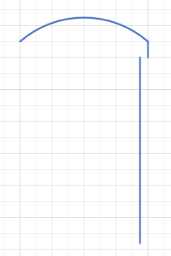

[Contour Fusion] Use Car Bounding Box of Dynamic Fusion to Correct Contour Fusion Output
CONTOUR FILTER BY DYNAMIC FUSION CA-BOX strategy time-consuming test
Time -consuming test statistics
DF Filter updates/filtration time consumption each time RUN
Run always takes time
data set
Average time consumption (MS)
Maximum time (MS)
Average time consumption (MS)
Maximum time (MS)
CNWVIII-79821
(There are fusion parking spaces, the number of CAR OBJ is large)
0.140
2.222
13.3
45.7
CNWVIII-89739
(Pure space vertical parking space, the number of Car Obj is small)
0.225
0.679
7.1
20.9
CNWVIII-89741
(Pure space oblique parking space, the number of CAR OBJ is small)
0.152
1.107
7.6
45.4
Time -consuming comparison diagram

Contour Filter by Dynamic Fusion CAR BOX Strategy Detailed Description
Filter (delete, correction) strategy description
The black box in the figure below is the CAR B-BOX output from DF
The red frame is the delete box of the Contour point. The original Contour Point in the box will be deleted. At the same time, the vehicle frame edge of the vehicle frame in the red frame is used as a new Contour Point output
The blue frame is a correction box for the Contour point. The Contour Point in the box will be translated by 15cm towards the projection point towards the car frame edge line, and only moves to the vehicle frame edge line.
On the edge of the vehicle frame in the blue frame, there will be no Contour's projection point.

Performance frame parameter numeralization description
Each of the DF CAR BOX received in the algorithm (the black frame in the figure below) will be unified according to the vehicle's body coordinate system. The specific unified rules are as follows:
When the angle of the vehicle box long and the X -axis direction vector (direction of the front) of the vehicle body is less than 30 ° or greater than 150 °, it will not be operated (the attribute is set to Invalid, and the level of parking space is not treated for the time being)
The nearest short side of the vehicle frame and the vehicle body is as the edge of Bottom
The four corner points of the vehicle frame are arranged clockwise: left_top-> right_top-> right_bottom → left_bottom
Including the above blue correction box and the red deletion box also abide by this rule
Fake Parking Slots expanded on both sides of the parking frame (red box in the figure below)
The two long sides of each CAR B-BOX will extend a Fake Parking Slot with a width of 3M. The role is:
Determine whether to intersect with PSD line parking spaces (independent judgment on the left and right sides of Car b-BOX), if intersecting, the corresponding side of the CAR B-BOX will no longer perform a Filter operation based on DF CAR BOXES
Determine whether the rear axis center of the vehicle enters any FAKE Parking Slot. If you enter, stop the Filter operation based on DF Car Boxes

Algorithm presidential flow chart

Summary for the first discussion
Correction strategy
Currently only correction of vertical space parking spaces
A slight correction of the 30%part of the parking space (relatively shallow), the maximum correction amplitude is 15cm
The deeper part of the parking space is corrected, and the maximum correction amplitude is 50cm

The phenomenon that can be accepted on the side of the vehicle's side

Revise time
Correct it only in pure space parking spaces
Amended (including Searching and Guardiance phase) before entering the virtual parking frame at the rear of the vehicle, stopped correction after entering